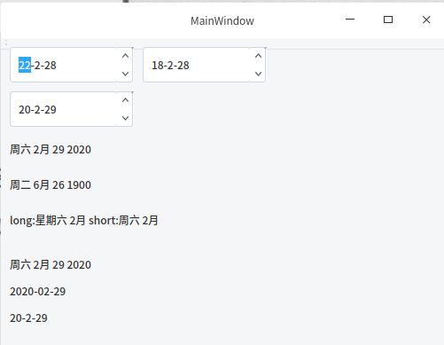
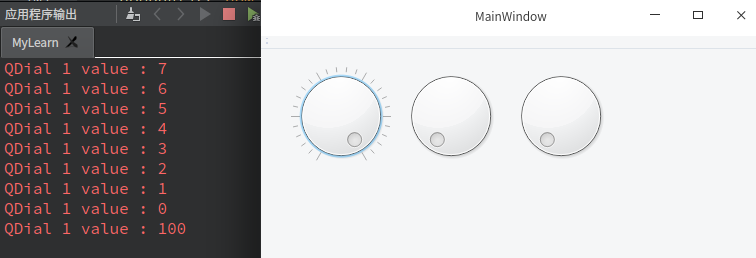
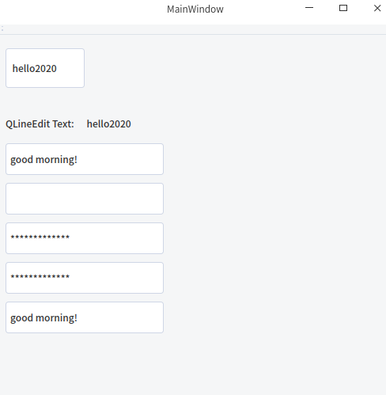
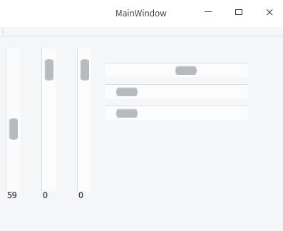

February 26, 2020 4:31 PM
1、QCheckBox和QButtonGroup
QCheckBox复选框
QButtonGroup单选框
//mainwindow.h
#ifndef MAINWINDOW_H
#define MAINWINDOW_H
#include <QMainWindow>
#include <QComboBox>
#include <QWidget>
#include <QDebug>
#include <QCheckBox>
#define QCHECKSIZE 3 //size of check number
namespace Ui {
class MainWindow;
}
class MainWindow : public QMainWindow
{
Q_OBJECT
public:
explicit MainWindow(QWidget *parent = nullptr);
~MainWindow();
QCheckBox *exclusive[QCHECKSIZE]; //3
QCheckBox *unexclusive[QCHECKSIZE];
QButtonGroup *chk_group[2];
public slots:
void chkChanged();
private:
Ui::MainWindow *ui;
};
#endif // MAINWINDOW_H
#include "mainwindow.h"
#include "ui_mainwindow.h"
MainWindow::MainWindow(QWidget *parent) :
QMainWindow(parent),
ui(new Ui::MainWindow)
{
ui->setupUi(this);
//QCheckBox make two group for examples
chk_group[0]=new QButtonGroup(this);
chk_group[1]=new QButtonGroup(this);
int xpos=20;
int ypos=20;
QString str_chk_1[3]={"red","green","yellow"};
QString str_chk_2[4]={"up","down","left"};
for(int i=0;i<QCHECKSIZE;++i){
exclusive[i]=new QCheckBox(str_chk_1[i],this);
exclusive[i]->setGeometry(xpos,ypos,100,30);
chk_group[0]->addButton(exclusive[i]); //first group setExclusive(flase)
unexclusive[i]=new QCheckBox(str_chk_2[i],this);
unexclusive[i]->setGeometry(xpos+120,ypos,100,30);
chk_group[1]->addButton(unexclusive[i]);//true
connect(exclusive[i],SIGNAL(clicked()),this,
SLOT(chkChanged()));
//unexclusive is not connect.
ypos+=40;
}
chk_group[0]->setExclusive(false); //more than one choose
chk_group[1]->setExclusive(true); //one choose
}
void MainWindow::chkChanged()
{
qDebug()<<"function chkChanged is called\n";
}
MainWindow::~MainWindow()
{
for(int i=0;i<2;++i){
if(chk_group!=nullptr)
delete chk_group[i];
}
for(int i=0;i<3;++i){
if(exclusive!=nullptr&&unexclusive!=nullptr){
delete exclusive[i];
delete unexclusive[i];
}
}
delete ui;
}
运行结果：
2、QComboBox
下拉列表框
#ifndef MAINWINDOW_H
#define MAINWINDOW_H
#include <QMainWindow>
#include <QComboBox>
#include <QWidget>
#include <QDebug>
namespace Ui {
class MainWindow;
}
class MainWindow : public QMainWindow
{
Q_OBJECT
public:
explicit MainWindow(QWidget *parent = nullptr);
~MainWindow();
QComboBox *combtn;
public slots:
void valueChanged();
private:
Ui::MainWindow *ui;
};
#endif // MAINWINDOW_H
//mainwindow.cpp
#include "mainwindow.h"
#include "ui_mainwindow.h"
MainWindow::MainWindow(QWidget *parent) :
QMainWindow(parent),
ui(new Ui::MainWindow)
{
ui->setupUi(this);
combtn=new QComboBox(this);
//combtn->setGeometry(10,10,100,100);
combtn->addItem("0.hello");
combtn->addItem("1.world");
combtn->addItem(QIcon("/home/abner/Desktop/0101.png"),"2.png");
bool ret=connect(combtn,SIGNAL(currentIndexChanged(int)),this,SLOT(valueChanged()));
if(true==ret)
qDebug()<<"successful\n";
else {
qDebug()<<"failed\n";
}
}
void MainWindow::valueChanged()
{
int currentIndex=combtn->currentIndex();
QString currentText=combtn->currentText();
qDebug()<<"now index is:"<<currentIndex<<'\t'<<currentText;
}
MainWindow::~MainWindow()
{
delete ui;
}
代码运行结果：
3、QCommandLinkButton
命令连接按钮
//main.c
#include "mainwindow.h"
#include <QApplication>
#include <QCommandLinkButton>
#include <QWidget>
int main(int argc, char *argv[])
{
QApplication a(argc, argv);
MainWindow w;
QCommandLinkButton *conlinkbtn=new QCommandLinkButton("Version",
"vision project",
&w);
conlinkbtn->setGeometry(10,10,100,100);
QObject::connect(conlinkbtn,SIGNAL(clicked()),&a,SLOT(quit()));
w.show();
return a.exec();
}
代码运行结果：
4、QDate类和QDateEdit控件
QDate::currentDate();//获取系统日期
dayOfYear() //一年中当前的天数
daysInMonth() //这年的天数
daysInYear() //这个月的天数
d 显示（1~31）
dd 显示两位数字的日（01~31）
ddd 显示三个字母的星期（Mon～Sun）
dddd 显示完整的星期（Monday～Sunday）
M 显示月（1~12）
MM 显示两个数字的月（01~12)
MMM 显示三个字母的月（Jan～Dec）
MMMM 显示完整的月（January～December）
yy 显示两位数字的年（00~99）
yyyy 显示四位数字的年（2020）
//mainwindow.h
#include <QDateEdit>
#include <QLabel>
QDateEdit *date_edit[3];
QLabel *lb1[6];
//mainwindow.cpp
#include "mainwindow.h"
#include "ui_mainwindow.h"
MainWindow::MainWindow(QWidget *parent) :
QMainWindow(parent),
ui(new Ui::MainWindow)
{
ui->setupUi(this);
this->setGeometry(20,20,500,600);
//QDate QDateEdit
QDate dt1=QDate(2020,02,28);
QDate dt2=QDate::currentDate();
date_edit[0]=new QDateEdit(dt1.addYears(2),this);
date_edit[0]->setGeometry(10,10,140,40);
date_edit[1]=new QDateEdit(dt1.addYears(-2),this);
date_edit[1]->setGeometry(160,10,140,40);
date_edit[2]=new QDateEdit(dt2,this);
date_edit[2]->setGeometry(10,60,140,40);
switch(dt2.dayOfWeek())
{
case 1:
qDebug()<<"Monday";
break;
case 2:
qDebug()<<"Tuesday";
break;
case 3:
qDebug()<<"Wednesday";
break;
case 4:
qDebug()<<"Thursday";
break;
case 5:
qDebug()<<"Friday";
break;
case 6:
qDebug()<<"Saturday";
break;
case 7:
qDebug()<<"Sunday";
break;
}
qDebug("Day of year:%d\n",dt1.dayOfYear());
qDebug("End Day:%d\n",dt1.daysInMonth());
qDebug("End Day:%d",dt1.daysInYear());
QDate dt3=QDate::fromString("2020.02.29","yyyy.MM.dd");
QDate dt4=QDate::fromString("06.26","MM.dd");
lb1[0]=new QLabel(dt3.toString(),this);
lb1[0]->setGeometry(10,110,150,30);
lb1[1]=new QLabel(dt4.toString(),this);
lb1[1]->setGeometry(10,150,150,30);
if(QDate::isValid(3333,3,3)){
qDebug("3333,3,3 true");
}
else {
qDebug("3333,3,3 false");
}
QDate dt5=QDate(2020,2,29);
QString long_week=dt5.longDayName(dt5.dayOfWeek());
QString long_month=dt5.longMonthName(dt5.month());
QString str_date_long=QString("%1 %2").arg(long_week).arg(long_month);
QString short_week=dt5.shortDayName(dt5.dayOfWeek());
QString short_month=dt5.shortMonthName(dt5.month());
QString str_date_short=QString("%1 %2").arg(short_week).arg(short_month);
lb1[2]=new QLabel(QString("long:%1 short:%2").arg(str_date_long).arg(str_date_short),this);
lb1[2]->setGeometry(10,190,250,30);
QDate dt6=QDate(2020,2,29);
lb1[3]=new QLabel(dt6.toString(Qt::TextDate),this); //default style
lb1[3]->setGeometry(10,240,250,30);
lb1[4]=new QLabel(dt6.toString(Qt::ISODate),this); //ISO8601 style
lb1[4]->setGeometry(10,270,250,30);
lb1[5]=new QLabel(dt6.toString(Qt::SystemLocaleDate),this); //international style
lb1[5]->setGeometry(10,300,250,30);
}
MainWindow::~MainWindow()
{
for (int i=0;i<6;++i) {
if(lb1[i]!=nullptr)
delete lb1[i];
}
delete ui;
}
运行结果：

5、QTime类和QTimeEdit控件
QTime类可以显示并编辑时、分、秒、毫秒
h 显示小时（0~23）
hh 显示两位数字的小时（00~23）
m 显示分钟（0~59)
mm 显示分钟（00~59）
s
ss
z 显示毫秒（0~999）
zzz
AP 用大写字母表示上午/下午（AM/PM）
ap 用小写字母表示
//mainwindow.h
#include <QTime>
#include <QTimeEdit>
QLabel *lb1[6];
QTimeEdit *time_edit[3];
//mainwindow.cpp
#include "mainwindow.h"
#include "ui_mainwindow.h"
MainWindow::MainWindow(QWidget *parent) :
QMainWindow(parent),
ui(new Ui::MainWindow)
{
ui->setupUi(this);
this->setGeometry(20,20,500,600);
//QTime QTimeEdit
QTime ti1=QTime(12,12,55,432);//hour min sec millisecond
QTimeEdit *qte;
qte =new QTimeEdit(ti1,this);
//delete qte;
qte->setGeometry(10,30,150,30);
QLabel *lbl_tostring=new QLabel(ti1.toString("AP hh:mm:ss:zzz"),this);
lbl_tostring->setGeometry(200,30,150,30);
time_edit[0]=new QTimeEdit(ti1.addMSecs(200),this);//add 200 milliseconds
time_edit[0]->setGeometry(10,60,150,30);
QTime ti2=QTime::currentTime();
time_edit[1]=new QTimeEdit(ti2,this);
time_edit[1]->setGeometry(10,90,150,30);
QTime ti3;
ti3.start();
for (int i=0;i<10000;++i) {
for(int j=0;j<10000;++j)
{
;
}
}
qDebug("time is:%d",ti3.elapsed());
QTime ti4=QTime::fromString("03:32","hh:mm");
QLabel *lbl_fromstring=new QLabel(ti4.toString(),this);
lbl_fromstring->setGeometry(10,120,150,30);
qDebug()<<"hour:"<<ti2.hour()<<"min:"<<ti2.minute()<<"sec:"<<ti2.second()<<"msec"<<ti2.msec();
}
运行结果：
6、QDateTime类和QDateTimeEdit控件
#include <QDateTime>
#include <QDateTimeEdit>
#include "mainwindow.h"
#include "ui_mainwindow.h"
MainWindow::MainWindow(QWidget *parent) :
QMainWindow(parent),
ui(new Ui::MainWindow)
{
ui->setupUi(this);
this->setGeometry(20,20,500,600);
//QDateTime QDateTimeEdit
QDateTimeEdit *qdte1;
qdte1=new QDateTimeEdit(QDateTime::currentDateTime(),this);
qdte1->setDisplayFormat("yyyy-MM-dd hh:mm:ss:zzz");
qdte1->setGeometry(10,30,250,50);
//little modify the time
QDateTimeEdit *qde[3];
qde[0]=new QDateTimeEdit(QDate::currentDate(),this);
qde[0]->setMinimumDate(QDate::currentDate().addYears(-3));
qde[0]->setMaximumDate(QDate::currentDate().addYears(3));
qde[0]->setDisplayFormat("yyyy");
qde[0]->setGeometry(10,90,100,50);
qde[1]=new QDateTimeEdit(QDate::currentDate(),this);
qde[1]->setMinimumDate(QDate::currentDate().addMonths(-2));
qde[1]->setMaximumDate(QDate::currentDate().addMonths(2));
qde[1]->setDisplayFormat("MM");
qde[1]->setGeometry(110,90,100,50);
qde[2]=new QDateTimeEdit(QDate::currentDate(),this);
qde[2]->setMinimumDate(QDate::currentDate().addDays(-20));
qde[2]->setMaximumDate(QDate::currentDate().addDays(20));
qde[2]->setDisplayFormat("dd");
qde[2]->setGeometry(210,90,100,50);
}
运行结果：
7、QDial
//mainwindow.h
public:
QDial *dial[3];
public slots:
void changedData();
//mainwindow.cpp
#include "mainwindow.h"
#include "ui_mainwindow.h"
MainWindow::MainWindow(QWidget *parent) :
QMainWindow(parent),
ui(new Ui::MainWindow)
{
ui->setupUi(this);
this->setGeometry(20,20,500,600);
//QDial
int xpos=30;
for (int i=0;i<3;++i,xpos+=110) {
dial[i]=new QDial(this);
dial[i]->setRange(0,100);
dial[i]->setGeometry(xpos,30,100,100);
}
dial[0]->setNotchesVisible(true);
connect(dial[0],SIGNAL(valueChanged(int)),this,SLOT(changedData()));
}
void MainWindow::changedData()
{
qDebug()<<"QDial 1 value :"<<dial[0]->value();
}
运行结果：

8、QSpinBox和QDoubleSpinBox
添加字符成员函数：
setPrefix(“$ “);
setSuffix(” mm”);
//添加信号和槽代码省略
#include <QSpinBox>
#include <QDoubleSpinBox>
QSpinBox *spin[3];
QDoubleSpinBox *doublespin[3];
#include "mainwindow.h"
#include "ui_mainwindow.h"
MainWindow::MainWindow(QWidget *parent) :
QMainWindow(parent),
ui(new Ui::MainWindow)
{
ui->setupUi(this);
this->setGeometry(20,20,500,600);
//QSpinBox QDoubleSpinBox
int xpos=10;
int ypos=30;
int val[3]={50,100,200};
double double_val[3]={50.5,127.32,171.342};
for (int i=0;i<3;++i) {
spin[i]=new QSpinBox(this);
spin[i]->setMinimum(10);
spin[i]->setMaximum(300);
spin[i]->setValue(val[i]);
spin[i]->setGeometry(xpos,ypos,100,30);
doublespin[i]=new QDoubleSpinBox(this);
doublespin[i]->setMinimum(10.0);
doublespin[i]->setMaximum(300.0);
doublespin[i]->setValue(double_val[i]);
doublespin[i]->setGeometry(xpos+110,ypos,100,30);
ypos+=40;
}
运行结果：
9、QPushButton和QFocusFrame
#include <QPushButton>
#include <QFocusFrame>
private slots:
void btnClick();
void btnPressed();
void btnReleased();
#include "mainwindow.h"
#include "ui_mainwindow.h"
MainWindow::MainWindow(QWidget *parent) :
QMainWindow(parent),
ui(new Ui::MainWindow)
{
ui->setupUi(this);
this->setGeometry(20,20,500,600);
QPushButton *btn[3];
int ypos=30;
for (int i=0;i<3;++i) {
btn[i]=new QPushButton(QString("Frame's button %1").arg(i),this);
btn[i]->setGeometry(10,ypos,300,40);
ypos+=50;
}
connect(btn[0],SIGNAL(clicked()),this,SLOT(btnClick()));
connect(btn[0],SIGNAL(pressed()),this,SLOT(btnPressed()));
connect(btn[0],SIGNAL(released()),this,SLOT(btnReleased()));
QFocusFrame *btn_frame=new QFocusFrame(this);
btn_frame->setWidget(btn[0]);
btn_frame->setAutoFillBackground(true);
}
void MainWindow::btnClick()
{
qDebug()<<"btnClick()";
}
void MainWindow::btnPressed()
{
qDebug()<<"btnPressed()";
}
void MainWindow::btnReleased()
{
qDebug()<<"btnRelease()";
}
运行结果：
10、QFontComboBox
QFontComboBox::AllFonts 值0 全部字体
QFontComboBox::ScalableFonts 值0x1 能自动变换扩大和缩小等形态的字体
QFontComboBox::NonScalableFonts 值0x2 不能自动转换形态的字体
QFontComboBox::MonospacedFonts 值0x3 固定宽度的字体
QFontComboBox::ProportionalFonts 值0x4 均衡宽度和幅度的字体
#include <QFontComboBox>
public:
QFontComboBox *fontcombo[5];
QLabel *lb_font;
private slots:
void changedIndex(int idx);
void changedFont(const QFont &f);
#include "mainwindow.h"
#include "ui_mainwindow.h"
MainWindow::MainWindow(QWidget *parent) :
QMainWindow(parent),
ui(new Ui::MainWindow)
{
ui->setupUi(this);
this->setGeometry(20,20,500,600);
//QFontComboBox
for (int i=0;i<5;++i) {
fontcombo[i]=new QFontComboBox(this);
}
fontcombo[0]->setFontFilters(QFontComboBox::AllFonts);
fontcombo[1]->setFontFilters(QFontComboBox::ScalableFonts);
fontcombo[2]->setFontFilters(QFontComboBox::NonScalableFonts);
fontcombo[3]->setFontFilters(QFontComboBox::MonospacedFonts);
fontcombo[4]->setFontFilters(QFontComboBox::ProportionalFonts);
int ypos=30;
for (int i=0;i<5;++i) {
fontcombo[i]->setGeometry(10,ypos,300,30);
ypos+=40;
}
lb_font=new QLabel("hello world",this);
lb_font->setGeometry(10,ypos,200,30);
connect(fontcombo[0],SIGNAL(currentIndexChanged(int)),this,
SLOT(changedIndex(int)));
connect(fontcombo[0],SIGNAL(currentFontChanged(QFont)),this,
SLOT(changedFont(const QFont &)));
}
void MainWindow::changedIndex(int idx)
{
int current_index=idx;
qDebug()<<"current index is:"<<current_index;
}
void MainWindow::changedFont(const QFont &f)
{
QFont font=f;
lb_font->setFont(font);
qDebug()<<"font is :"<<font;
}
运行结果：
12、QLabel和QLCDNumber
#include <QLCDNumber>
#include <QLabel>
QLabel *lb2[2];
//QLabel QLCDNumber
lb2[0]=new QLabel("hello world",this);
lb2[0]->setGeometry(10,30,200,40);
QPixmap pix=QPixmap("/home/abner/Desktop/0101.png");
lb2[1]=new QLabel(this);
lb2[1]->setPixmap(pix);
lb2[1]->setGeometry(10,70,100,100);
运行结果：
QLCDNumber *lcd[2];
lcd[0]=new QLCDNumber(2,this);
lcd[0]->display(24);
lcd[0]->setGeometry(150,30,200,100);
lcd[1]=new QLCDNumber(5,this);
lcd[1]->display("10:06");
lcd[1]->setGeometry(150,140,200,100);
//lcd[1]->setSegmentStyle(QLCDNumber::Outline);
//Outline 显示与窗口背景相同的颜色
//Filled 显示与字体颜色相同的颜色
//Flat 不显示字体外框线的风格
13、QLineEdit
对text进行加密函数setEchoMode();
//QLineEdit::Normal 值0 与默认类型一致
//QLineEdit::NoEcho 值1 隐藏输入的文本，不改变光标的位置
//QLineEdit::Password 值2 用“
”表示文本
//QLineEdit::PasswordEchoOnEdit 值3 若编辑文本，则与默认类型一致，但若移动焦点，则显示“
”
#include <QLineEdit>
private:
QLineEdit *edit;
QLabel *lb_le;
QLabel *lb_edit;
QLineEdit *edit_em[5];
private slots:
void textChanged(QString str);
#include "mainwindow.h"
#include "ui_mainwindow.h"
MainWindow::MainWindow(QWidget *parent) :
QMainWindow(parent),
ui(new Ui::MainWindow)
{
ui->setupUi(this);
this->setGeometry(20,20,500,600);
//QLineEdit
edit=new QLineEdit(" ",this);
edit->setGeometry(10,30,100,50);
lb_edit=new QLabel(this);
lb_le=new QLabel("QLineEdit Text:",this);
lb_le->setGeometry(10,100,100,50);
connect(edit,SIGNAL(textChanged(QString)),this,
SLOT(textChanged(QString)));
int ypos=150;
for(int i=0;i<5;++i)
{
edit_em[i]=new QLineEdit("good morning!",this);
edit_em[i]->setGeometry(10,ypos,200,40);
ypos+=50;
}
edit_em[0]->setEchoMode(QLineEdit::Normal);
edit_em[1]->setEchoMode(QLineEdit::NoEcho);
edit_em[2]->setEchoMode(QLineEdit::Password);
edit_em[3]->setEchoMode(QLineEdit::PasswordEchoOnEdit);
}
void MainWindow::textChanged(QString str)
{
lb_edit->setText(str);
lb_edit->setGeometry(110,100,100,50);
}
运行结果：

14、QMenu和QMenuBar
#include <QMenu>
#include <QMenuBar>
QMenu *menu[3];
QAction *act[2];
QMenuBar *menubar;
QLabel *lb_menu;
#include "mainwindow.h"
#include "ui_mainwindow.h"
MainWindow::MainWindow(QWidget *parent) :
QMainWindow(parent),
ui(new Ui::MainWindow)
{
ui->setupUi(this);
//QMenu QMenuBar
menu[0]=new QMenu("File");
menu[0]->addAction("Edit");
menu[0]->addAction("View");
menu[0]->addAction("Tools");
act[0]=new QAction("New",this);
act[0]->setShortcut(Qt::CTRL|Qt::Key_A);
act[0]->setStatusTip("this is a new menu");
act[1]=new QAction("open",this);
act[1]->setCheckable(true);
menu[1]=new QMenu("save");
menu[1]->addAction(act[0]);
menu[1]->addAction(act[1]);
menu[2]=new QMenu("print");
menu[2]->addAction("page setup");
menu[2]->addMenu(menu[1]);
menubar=new QMenuBar(this);
menubar->addMenu(menu[0]);
menubar->addMenu(menu[2]);
lb_menu=new QLabel(this);
lb_menu->setGeometry(200,200,150,30);
connect(menubar,SIGNAL(triggered(QAction*)),this,
SLOT(trigerMenu(QAction*)));
}
void MainWindow::trigerMenu(QAction*act)
{
QString str=QString("selected menu:%1").arg(act->text());
lb_menu->setText(str);
}
15、QProgressBar
#include <QProgressBar>
QProgressBar *progress[2];
#include "mainwindow.h"
#include "ui_mainwindow.h"
MainWindow::MainWindow(QWidget *parent) :
QMainWindow(parent),
ui(new Ui::MainWindow)
{
ui->setupUi(this);
//QProgressBar
progress[0] =new QProgressBar(this);
progress[0]->setGeometry(0,0,100,30);
progress[0]->setMinimum(0);
progress[0]->setMaximum(100);
progress[0]->setValue(50);
progress[0]->setOrientation(Qt::Horizontal);
progress[1] =new QProgressBar(this);
progress[1]->setGeometry(0,60,100,30);
progress[1]->setMinimum(0);
progress[1]->setMaximum(100);
progress[1]->setValue(75);
progress[1]->setOrientation(Qt::Horizontal);
progress[1]->setInvertedAppearance(true);//direction
}
运行结果：
16、QRadioButton
#include <QRadioButton>
QRadioButton *radio[3];
QRadioButton *radio1[3];
#include "mainwindow.h"
#include "ui_mainwindow.h"
MainWindow::MainWindow(QWidget *parent) :
QMainWindow(parent),
ui(new Ui::MainWindow)
{
ui->setupUi(this);
//QRadioButton
QString str_rb_1[3]={"apple","orange","book"};
int ypos=30;
for (int i=0;i<3;++i) {
radio[i]=new QRadioButton(str_rb_1[i],this);
radio[i]->setGeometry(10,ypos,150,30);
ypos+=40;
}
QString str_rb_2[3]={"In-Vehicle","Smart TV","Media Phone"};
ypos=30;
for (int i=0;i<3;++i) {
radio1[i]=new QRadioButton(str_rb_2[i],this);
if(i==2)
radio1[i]->setChecked(true);
radio1[i]->setGeometry(180,ypos,150,30);
ypos+=40;
}
}
运行结果：
17、QScrollArea
#include <QScrollArea>
QLabel *lb_sa;
QScrollArea *area;
#include "mainwindow.h"
#include "ui_mainwindow.h"
MainWindow::MainWindow(QWidget *parent) :
QMainWindow(parent),
ui(new Ui::MainWindow)
{
ui->setupUi(this);
//QScrollArea
QImage image("/home/abner/Desktop/test.jpg");
lb_sa=new QLabel(this);
lb_sa->setPixmap(QPixmap::fromImage(image));
area=new QScrollArea(this);
area->setWidget(lb_sa);
area->setBackgroundRole(QPalette::Dark);
area->setGeometry(0,0,image.width(),image.height()-60);
}
运行结果：
18、QScrollBar
#include <QScrollBar>
QScrollBar *vscrollbar[3];
QScrollBar *hscrollbar[3];
QLabel *lb_sb[3];
private slots:
void valueChangedSB(int value);
#include "mainwindow.h"
#include "ui_mainwindow.h"
MainWindow::MainWindow(QWidget *parent) :
QMainWindow(parent),
ui(new Ui::MainWindow)
{
ui->setupUi(this);
//QScrollBar
int xpos=10;
int ypos=50;
for (int i=0;i<3;++i) {
vscrollbar[i]=new QScrollBar(Qt::Vertical,this);
vscrollbar[i]->setRange(0,100);
vscrollbar[i]->setGeometry(xpos,30,20,200);
lb_sb[i]=new QLabel(QString("%1").arg(vscrollbar[i]->value()),this);
lb_sb[i]->setGeometry(xpos+2,220,30,30);
xpos+=50;
hscrollbar[i]=new QScrollBar(Qt::Horizontal,this);
hscrollbar[i]->setRange(0,100);
hscrollbar[i]->setGeometry(150,ypos,200,20);
ypos+=30;
}
connect(vscrollbar[0],SIGNAL(valueChanged(int)),this,
SLOT(valueChangedSB(int)));
}
void MainWindow::valueChangedSB(int value)
{
lb_sb[0]->setText(QString("%1").arg(value));
hscrollbar[0]->setValue(vscrollbar[0]->value());
}
运行结果：

19、QSizeGrip
//widget.h
#ifndef WIDGET_H
#define WIDGET_H
#include <QWidget>
#include <QSizeGrip>
#include <QVBoxLayout>
#include <QTextEdit>
namespace Ui {
class Widget;
}
class Widget : public QWidget
{
Q_OBJECT
public:
explicit Widget(QWidget *parent = nullptr);
~Widget();
private:
Ui::Widget *ui;
};
class SubWindow:public QWidget
{
Q_OBJECT
public:
SubWindow(QWidget*parent=0):QWidget(parent,Qt::SubWindow)
{
QSizeGrip *sizegrip=new QSizeGrip(this);
sizegrip->setFixedSize(sizegrip->sizeHint());
this->setLayout(new QVBoxLayout);
this->layout()->setMargin(0);
layout()->addWidget(new QTextEdit);
sizegrip->setWindowFlags(Qt::WindowStaysOnTopHint);
sizegrip->raise();
}
QSize sizeHint()const
{
return QSize(200,100);
}
};
#endif // WIDGET_H
//widget.cpp
#include "widget.h"
#include "ui_widget.h"
Widget::Widget(QWidget *parent) :
QWidget(parent),
ui(new Ui::Widget)
{
ui->setupUi(this);
}
Widget::~Widget()
{
delete ui;
}
//main.cpp
#include "widget.h"
#include <QApplication>
int main(int argc, char *argv[])
{
QApplication a(argc, argv);
Widget w;
w.resize(400,300);
SubWindow subwindow(&w);
subwindow.move(200,180);
w.show();
return a.exec();
}
运行结果：
20、QSlider
#include <QSlider>
QSlider *slider[4];
QLabel *lb_sl;
private slots:
void valueChangedSlider(int value);
#include "mainwindow.h"
#include "ui_mainwindow.h"
MainWindow::MainWindow(QWidget *parent) :
QMainWindow(parent),
ui(new Ui::MainWindow)
{
ui->setupUi(this);
//QSlider
int xpos=0;
int ypos=0;
for (int i=0;i<4;++i) {
if(i<=2){
slider[i]=new QSlider(Qt::Vertical,this);
slider[i]->setGeometry(xpos,20,30,80);
xpos+=30;
}
else if (i>=3) {
slider[i]=new QSlider(Qt::Horizontal,this);
slider[i]->setGeometry(130,ypos,80,30);
ypos+=30;
}
slider[i]->setRange(0,100);
slider[i]->setValue(50);
}
lb_sl=new QLabel(this);
connect(slider[0],SIGNAL(valueChanged(int)),this,
SLOT(valueChangedSlider(int)));
}
void MainWindow::valueChangedSlider(int value)
{
lb_sl->setText(QString("%1").arg(value));
slider[3]->setValue(slider[0]->value());
}
运行结果：
21、QTabWidget
#include "mainwindow.h"
#include "ui_mainwindow.h"
MainWindow::MainWindow(QWidget *parent) :
QMainWindow(parent),
ui(new Ui::MainWindow)
{
ui->setupUi(this);
//QTabWidget
QTabWidget *tab=new QTabWidget(this);
tab->setGeometry(50,50,200,200);
QWidget *browser_tab=new QWidget;
QWidget *user_tab=new QWidget;
tab->addTab(browser_tab,QIcon("./../../static/src/basicwidget/browser.png"),"Browser");
tab->addTab(user_tab,QIcon("./../../static/src/basicwidget/user.png"),"User");
QString btn_str[3]={"button1","button2","button3"};
QPushButton *btn[3];
int ypos=30;
for (int i=0;i<3;++i) {
btn[i]=new QPushButton(btn_str[i],browser_tab);
btn[i]->setGeometry(10,ypos,100,40);
ypos+=50;
}
//connect(tab,SIGNAL(currentchanged(int)),
}
运行结果：
22、QToolBar和QAction
//Qt::ToolButtonIconOnly 值0 只显示图标
//Qt::ToolButtonTextOnly 值1 只显示按钮名称
//Qt::ToolButtonTextBesideIcon 值2 在文本内显示图标
//Qt::ToolButtonTextUnderIcon 值3 在文本下方显示图标
#include <QToolBar>
#include <QAction>
private slots:
void triggerToolbar();
#include "mainwindow.h"
#include "ui_mainwindow.h"
MainWindow::MainWindow(QWidget *parent) :
QMainWindow(parent),
ui(new Ui::MainWindow)
{
ui->setupUi(this);
//QToolBar QAction
QToolBar *toolbar=new QToolBar(this);
toolbar->setFixedSize(500,30);
QAction *act[2];
act[0]=new QAction(QIcon("./../../static/src/basicwidget/browser.png"),"Browser",this);
act[1]=new QAction(QIcon("./../../static/src/basicwidget/user.png"),"User",this);
act[0]->setShortcut(Qt::Key_Control|Qt::Key_E);
act[0]->setToolTip("this is a tooltip");
for (int i=0;i<2;++i) {
toolbar->addAction((act[i]));
}
toolbar->setToolButtonStyle(Qt::ToolButtonTextBesideIcon);
connect(act[0],SIGNAL(triggered()),this,
SLOT(triggerToolbar()));
}
void MainWindow::triggerToolbar()
{
qDebug()<<"tool button 1 click";
}
运行结果：
23、QWidget
成员函数：
void QWidget::paintEvent(QPaintEvent
event)[virtual protected]
void QWidget::resizeEvent(QResizeEvent
event)[virtual protected]
mousePressEvent();
mouseReleaseEvent();
moveEvent();
mouseDoubleClickEvent();
keyPressEvent()
KeyReleaseEvent()
focusInEvent()
focusOutEvent()
24、QTabBar
#include "mainwindow.h"
#include "ui_mainwindow.h"
MainWindow::MainWindow(QWidget *parent) :
QMainWindow(parent),
ui(new Ui::MainWindow)
{
ui->setupUi(this);
//QTabBar
tabbar=new QTabBar(this);
tabbar->setFixedSize(300,200);
tabbar->setGeometry(0,50,400,400);
tabbar->addTab("Browser");
tabbar->addTab("User");
tabbar->addTab("Application");
connect(tabbar,SIGNAL(currentChanged(int)),this,
SLOT(currentTab(int)));
}
void MainWindow::currentTab(int value)
{
qDebug()<<"current value is:"<<value;
}
25、QToolBox
#include "mainwindow.h"
#include "ui_mainwindow.h"
MainWindow::MainWindow(QWidget *parent) :
QMainWindow(parent),
ui(new Ui::MainWindow)
{
ui->setupUi(this);
//QToolBox
toolbox=new QToolBox(this);
toolbox->setFixedSize(200,200);
lay=new QHBoxLayout(this);
push_btn[0]=new QPushButton("database - 1",this);
push_btn[1]=new QPushButton("network - 2",this);
push_btn[2]=new QPushButton("graphlics - 3",this);
toolbox->addItem(push_btn[0],"database");
toolbox->addItem(push_btn[1],"network");
toolbox->addItem(push_btn[2],"graphlics");
lay->addWidget(toolbox);
setLayout(lay);
connect(toolbox,SIGNAL(currentChanged(int)),this,
SLOT(changedTabBox(int)));
}
void MainWindow::changedTabBox(int value)
{
qDebug()<<value;
}
运行结果：
26、QToolButton
//QToolButton
QToolBar *tool=new QToolBar(this);
QToolButton *button=new QToolButton;
button->setIcon(QIcon("./../../static/src/basicwidget/browser.png"));
QToolButton *button_1=new QToolButton;
button_1->setIcon(QIcon("./../../static/src/basicwidget/user.png"));
tool->addWidget(button);
tool->addWidget(button_1);
tool->addSeparator();